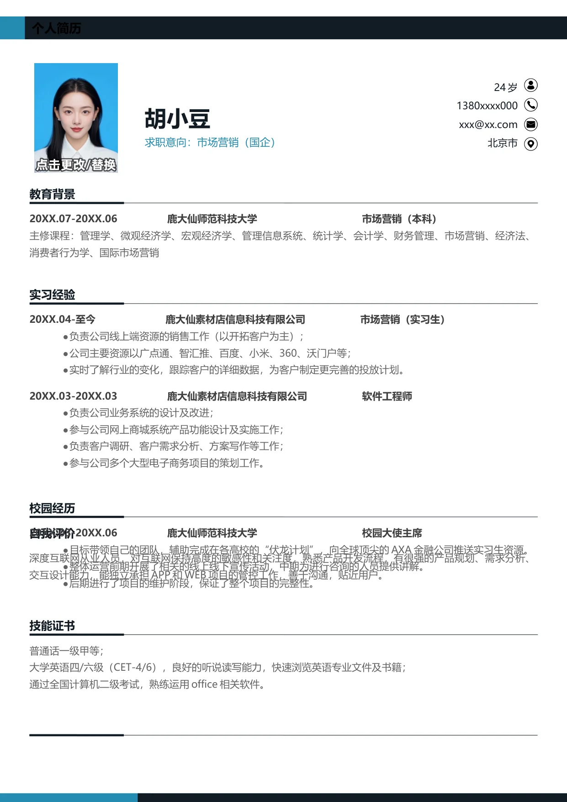

个人简历
胡小豆
求职意向：市场营销（国企）
20XX.04-至今 鹿大仙素材店信息科技有限公司 市场营销（实习生）
•
负责公司线上端资源的销售工作（以开拓客户为主）；
•
公司主要资源以广点通、智汇推、百度、小米、360、沃门户等；
•
实时了解行业的变化，跟踪客户的详细数据，为客户制定更完善的投放计划。
20XX.03-20XX.03 鹿大仙素材店信息科技有限公司 软件工程师
•
负责公司业务系统的设计及改进；
•
参与公司网上商城系统产品功能设计及实施工作；
•
负责客户调研、客户需求分析、方案写作等工作；
•
参与公司多个大型电子商务项目的策划工作。
实习经验
24 岁
1380xxxx000
xxx@xx.com
北京市
普通话一级甲等；
大学英语四/六级（CET-4/6），良好的听说读写能力，快速浏览英语专业文件及书籍；
通过全国计算机二级考试，熟练运用office 相关软件。
技能证书
20XX.07-20XX.06 鹿大仙师范科技大学 市场营销（本科）
主修课程：管理学、微观经济学、宏观经济学、管理信息系统、统计学、会计学、财务管理、市场营销、经济法、
消费者行为学、国际市场营销
教育背景
深度互联网从业人员，对互联网保持高度的敏感性和关注度，熟悉产品开发流程，有很强的产品规划、需求分析、
交互设计能力，能独立承担APP 和WEB 项目的管控工作，善于沟通，贴近用户。
自我评价
20XX.03-20XX.06 鹿大仙师范科技大学 校园大使主席
•
目标带领自己的团队，辅助完成在各高校的“伏龙计划”，向全球顶尖的AXA 金融公司推送实习生资源。
•
整体运营前期开展了相关的线上线下宣传活动，中期为进行咨询的人员提供讲解。
•
后期进行了项目的维护阶段，保证了整个项目的完整性。
校园经历